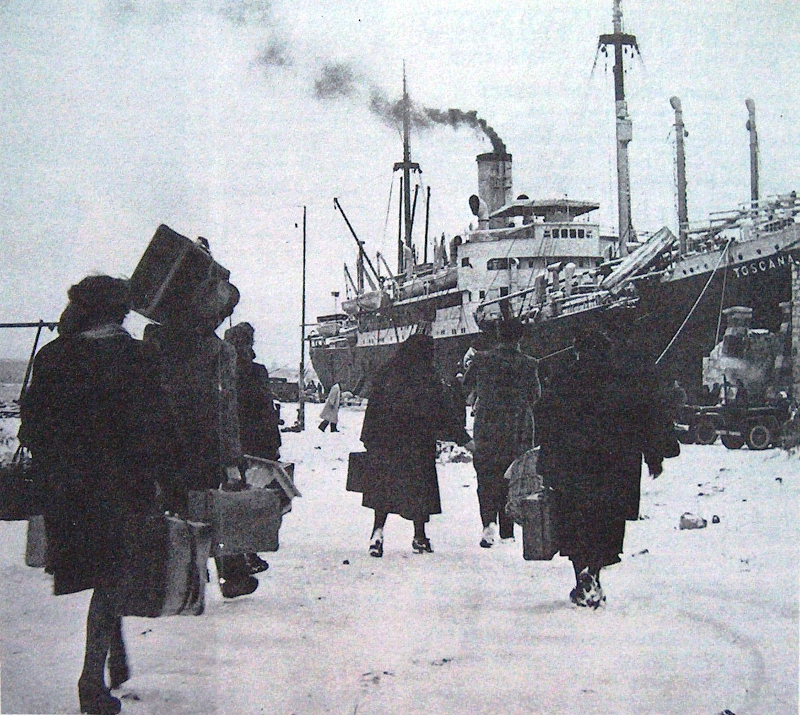
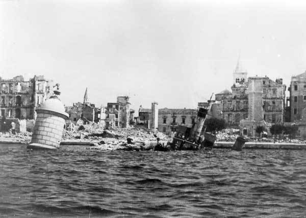
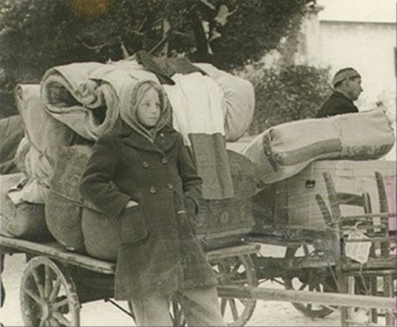
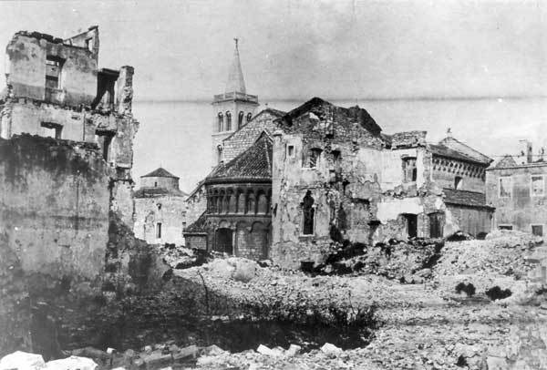
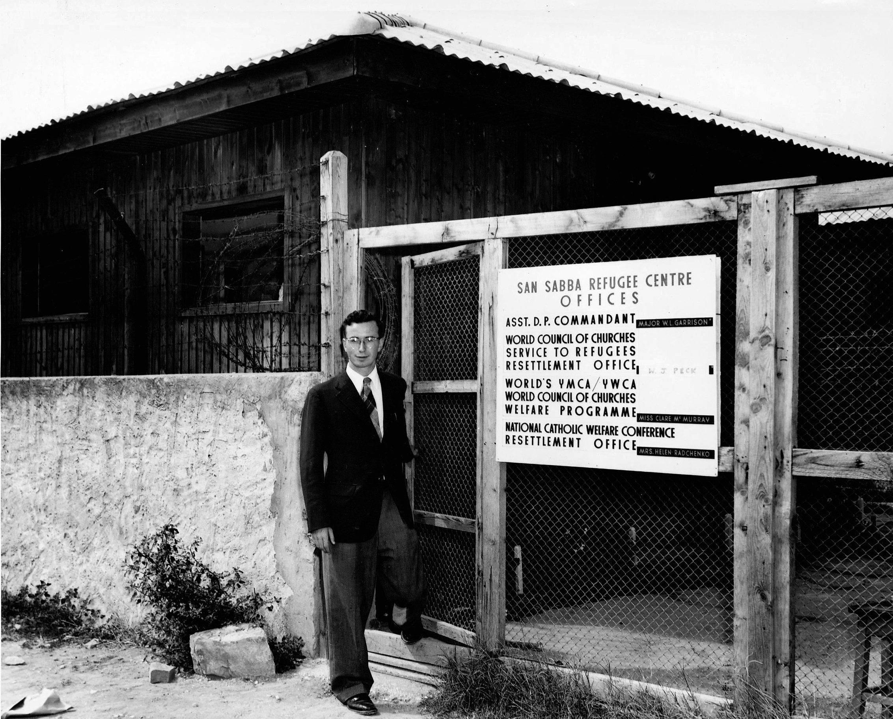

L'Esodo
Giuliano Dalmata
Una delle più grandi tragedie del Novecento
Tra il 1943 e gli anni Sessanta, circa 350.000 cittadini italiani della Venezia Giulia, dell'Istria, di Fiume e della Dalmazia furono costretti ad abbandonare le proprie case, i propri luoghi, la propria identità. Questo fenomeno, noto come l'esodo giuliano dalmata, rappresenta una delle pagine più complesse e a lungo silenziose della storia italiana del dopoguerra.
Le cause risiedono nella ridefinizione dei confini seguita alla Seconda guerra mondiale: il Trattato di Parigi del 1947 e poi il Memorandum di Londra del 1954 assegnarono all'allora Jugoslavia di Tito i territori dell'Istria e della Dalmazia, dove vivevano comunità italiane radicate da secoli. La scelta tra restare, spesso in condizioni di paura e discriminazione, o partire si impose con drammatica urgenza.
Le foibe e il 10 Febbraio
Parallelamente all'esodo si consumò la tragedia delle foibe: migliaia di italiani (e di anti-comunisti locali) furono massacrati dalle forze partigiane jugoslave di Tito e gettati in cavità naturali carsiche, le foibe, tra il 1943 e il 1945.
Dal 2004 la legge italiana istituisce il 10 Febbraio come Giorno del Ricordo, in memoria delle vittime delle foibe e degli esuli istriano-dalmati. Una ricorrenza per non dimenticare, per comprendere e per tramandare una memoria che per decenni era rimasta ai margini del discorso pubblico.
«Tra la soggezione alla dittatura comunista e il destino, amaro, dell'esilio, della perdita della casa, delle proprie radici, delle attività economiche, questi italiani compirono la scelta giusta. La scelta della libertà.»— Sergio Mattarella, 10 febbraio 2023
Perché studiare la Frontiera Adriatica?
Le terre della Frontiera Adriatica sono state un vero e proprio «laboratorio della contemporaneità» nei suoi aspetti più drammatici: conflitti nazionali ed etnici intrecciati a rivalità di potenza; instaurazione di regimi autoritari; mancato rispetto dei diritti nazionali e oppressione delle minoranze; persecuzioni, stragi e spostamenti forzati di popolazione. Studiare questa storia «vicina» è un'occasione per esplorare fenomeni storici più generali, condivisi con altre aree di frontiera europee.
Ricordare con partecipazione significa anche collaborare a ricucire quella ferita, secondo lo spirito cui è improntata la legge costitutiva del Giorno del Ricordo. (Fonte: La Frontiera Adriatica — Quaderno didattico, ANVGD 2024)
Immagini storiche

La nave Toscana durante l'abbandono di Pola (1947)

Veduta di Zara distrutta dai bombardamenti (Molo di Riva Nuova)

Una giovane esule italiana in fuga porta con sé una bandiera tricolore (1945)
Una bambina con il cartello «Esule giuliana n. 30001»

Zara: il campanile del Duomo e l'abside della chiesa di San Crisogono, colpita dai bombardamenti

Il centro per rifugiati di San Sabba (1950)
← Trascina o scorri per navigare tra le immagini
Risorse e approfondimenti